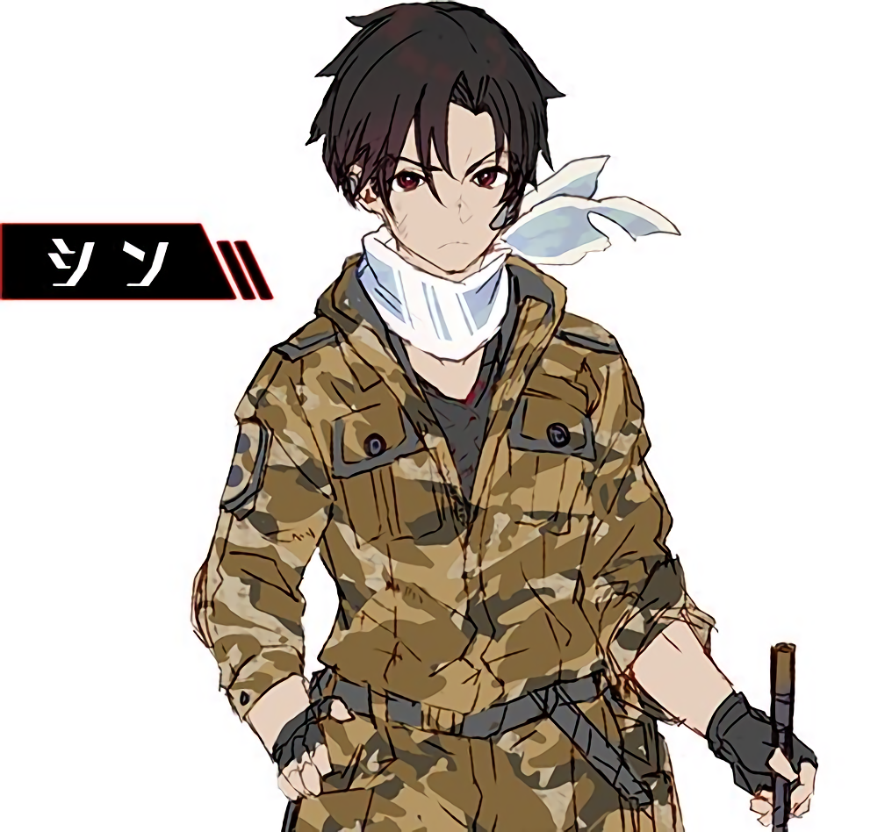

主要角色
辛耶·諾贊／辛(シンエイ・ノウゼン／シン)

共和國第86區的「86」（有人駕駛無人機的駕駛員），東部戰線第1戰區第1戰隊「先鋒部隊」的隊長，隊伍編號：001，人類方代號「送葬者」（アンダーテイカー）（UNDERTAKER）。軍團方代號「火眼」（BALEYGR）。
血紅色眼瞳黑髮，具赤系種與黑系種貴族血統（焰紅種與夜黑種，兩者同時亦為舊齊亞德帝國皇室的血統），脖子總是配戴一條天藍色領巾。小說第1卷初登場時為16歲。父母為帝國人，和哥哥雷都在共和國出生。
性格淡漠，不苟言笑。擁有高超的操縱技術及能夠聽到「亡靈之聲」的異能，從而得知軍團的位置與動向，但無法判斷其在三維立體空間中的高低位置。
喜歡蕾娜，於小說第7卷表白，第9卷成為戀人。
芙拉蒂蕾娜·米利傑／蕾娜(ヴラディレーナ・ミリーゼ／レーナ)

共和國軍人，白系種貴族（白銀種）血統，銀髮銀瞳，年僅16歲即晉升少校的精英。小說第1卷初登場時為16歲。
共和國內部少有對「86」抱持同情觀點的人。第1卷時接任辛所屬的「先鋒」戰隊的指揮管制官，起初只想盡本份指揮戰隊作戰，但在得知86毫無盼望的現實與共和國的腐敗後，理想最終破滅。
擅長制定戰術，絕不讓部下白白犧牲，能完美推斷出「軍團」行軍路線，分毫不差，亦曾大膽以自身所坐的「裝甲指揮車輛（華納女神）」直接撞上並輾壓斥候機型。
喜歡辛，於第7卷被辛表白，以親吻作回應，但因突如其來親了辛，所以覺得害羞而逃跑。直到第9卷才與辛成為了戀人。